Zennの「LLM」のフィード
フィード
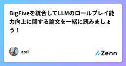
BigFiveを統合してLLMのロールプレイ能力向上に関する論文を一緒に読みましょう！
Zennの「LLM」のフィード
ORCA: Big Five を統合して LLM のロールプレイ能力を底上げするこの記事は，「自分の理解を深めたい」という気持ちで書いています．読者のみなさんと同じ目線で，一緒に理解を育てていくスタイルです．僕の理解が及ばない部分があれば，優しく教えていただけると幸いです！ TL;DRORCAは，ユーザの Big Five（各6サブ次元=計35次元） に基づく性格特性を，データ拡張と指示調整を通じて LLM のロールプレイに組み込む枠組み．4段構成：①性格推定→②データ拡張（プロフィール/潜在知識/心理活動）→③PCIP（性格条件付き指示プロンプト）でのデータ化→④PTI...
8時間前
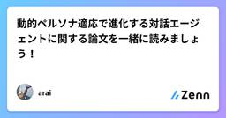
動的ペルソナ適応で進化する対話エージェントに関する論文を一緒に読みましょう！
Zennの「LLM」のフィード
SPDA: 会話中に“自分のペルソナ”を進化させる個人化対話エージェントこの記事は，「自分の理解を深めたい」という気持ちで書いています．読者のみなさんと同じ目線で，一緒に理解を育てていくスタイルです．僕の理解が及ばない部分があれば，優しく教えていただけると幸いです！ TL;DRSPDA（Self-evolving Personalized Dialogue Agents）は，対話の最中にエージェント自身のペルソナを動的に更新してユーザに徐々に合わせ込む枠組み．属性レベルとプロフィール（全体）レベルの二段で適応し，整合性チェックで矛盾を回避する．テストベッドは Emo...
9時間前
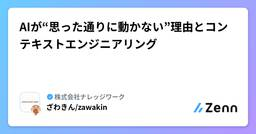
AIが“思った通りに動かない”理由とコンテキストエンジニアリング
Zennの「LLM」のフィード
この記事について!この記事は「KNOWLEDGE WORK Blog Sprint 2025」の一環として公開されています。（ナレッジワークのエンジニアが、9月の1か月間リレー形式で記事を発信する企画です） TL;DRAIが「思った通りに動かない」のは、単なるモデルの能力不足ではなく、 情報設計 の問題が大きい情報を増やすだけでは逆効果になることもあり、 整理・最適化して渡す 「コンテキストエンジニアリング」が鍵 となるこれはプロンプトの工夫を超えた “情報の物流設計” であり、AI活用の新しい必須スキルである この記事の分量と内容本記事は 約15分前後で...
12時間前
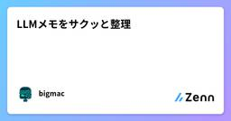
LLMメモをサクッと整理
Zennの「LLM」のフィード
1. OpenAI 系列 GPT-4o & GPT-4.1GPT-4o：複雑な推論・高精度タスク向け。マルチモーダル（画像/動画対応）。GPT-4o-mini：要約・翻訳など軽量タスク向け。GPT-3.5の後継。GPT-4.1（2025年中）：速度・コスト効率改善。精度とリソースのバランス◎。汎用〜高度用途まで対応。 o1 & o3 系列 — AGIに最も近い？o1（2024年9月）：超高精度・超高コスト（GPT-4o-miniの30倍以上）。o3（2025年初）：ARC-AGI：87.5%（人間トップは87%）→ AGIレベルと...
12時間前
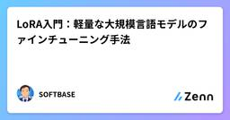
LoRA入門：軽量な大規模言語モデルのファインチューニング手法
Zennの「LLM」のフィード
大規模言語モデル（LLM）は高性能ですが、そのままファインチューニングすると膨大な計算リソースやストレージを必要とします。例えば、数十億パラメータを持つモデル全体を更新するのは現実的ではありません。そこで登場するのが LoRA（Low-Rank Adaptation） です。LoRAは「全パラメータを更新する代わりに、低ランク行列を追加して学習」する手法で、以下のような特徴があります。低コスト：更新するパラメータがごく一部に限られる高速：GPUメモリ使用量が大幅に削減される柔軟：複数のLoRAアダプタを組み合わせて利用可能本記事では、LoRAを使ったファインチューニン...
1日前
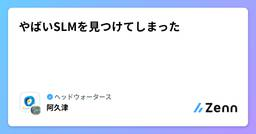
やばいSLMを見つけてしまった
Zennの「LLM」のフィード
その名も「Doge」...https://huggingface.co/SmallDoge/Doge-60M-Instruct ポイント1. 怪しい挿絵が怪しい。関連論文著者の連絡先がGmailというのも怪しい。 ポイント2. モデルサイズモデルが小さすぎる。重みファイルがBF16で100MBほどしかない。あのQwen3-0.6Bやapple/FastVLM-0.5Bですら、BF16で1.5GBぐらいのサイズである。https://huggingface.co/Qwen/Qwen3-0.6B/tree/mainhttps://huggingface.co/a...
1日前
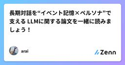
長期対話を“イベント記憶×ペルソナ”で支える LLMに関する論文を一緒に読みましょう！
Zennの「LLM」のフィード
LD-Agent: 長期対話を“イベント記憶×ペルソナ”で支える LLM パーソナライズド・エージェントこの記事は，「自分の理解を深めたい」という気持ちで書いています．読者のみなさんと同じ目線で，一緒に理解を育てていくスタイルです．僕の理解が及ばない部分があれば，優しく教えていただけると幸いです！ TL;DRLD-Agent は長期・マルチセッション対話のためのモデル非依存フレームワーク．①イベント知覚（長期/短期メモリ），②ペルソナ抽出（ユーザ/エージェント双方），③応答生成の3モジュールで構成し，取得したメモリとペルソナを統合して応答を誘導します．長期メモリは...
1日前
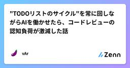
"TODOリストのサイクル"を常に回しながらAIを働かせたら、コードレビューの認知負荷が激減した話
Zennの「LLM」のフィード
※ 約2分で読めます!この記事は人間が100%書きましたもはや何番煎じか分からない「AIにTODOリストを書かせる」という発想が、意外にも、あとから 「人間が」『AIは"なぜ"そのコードを書いたのか？』を追跡するのに役立つことに気付いたよ、というお話です。※ いま流行りの仕様駆動開発のお話ではありません。 何を解決する記事なのか皆さん、コーディングAgent（Claude Code, Codex, GitHub Copilot...）を使っていますか？きっと使っていますよね。確か、つい半年か1年前くらいまでは、AIには小さな関数や機能単位でコードを書かせていたよう...
1日前
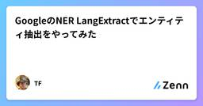
GoogleのNER LangExtractでエンティティ抽出をやってみた
Zennの「LLM」のフィード
本記事は、Google謹製の文章からエンティティを抽出するPythonライブラリLangExtractの紹介になります。ユースケースとしては、ニュース記事などの非構造化データから、人物名など特定のキーワードを抽出し、文章にタグをつけたり、グラフDBを作成することで、RAGのコンテキストの精度を高めることができます。!後でご紹介しますが、天気のニュース記事から、日付、地域、天候を抽出することが可能です。これにより、曖昧な非構造化データを、正規化した構造化データに変換することが可能です。 インストール方法Pythonのライブラリをインストールします。langextractの...
1日前
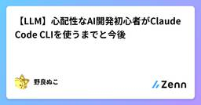
【LLM】心配性なAI開発初心者がClaude Code CLIを使うまでと今後
Zennの「LLM」のフィード
はじめに 対象何から始めたらいいか分からないので、誰かのムーブを参考にしたい人向け。石橋を叩きながら三歩進んで二歩下がるITエンジニア向け。 記事の趣旨最近話題のChatGPTやClaude Code、正直今も困ってないけど凄そうだ。しかし心配性で、腰が重くて、守銭奴のように財布の紐が固くて、何かと言い訳をしつつ、まだ触ってないという方は多いのではないかと思います。私も少し前までそうでした。何なら今でも20日やそこら触っただけのぺいぺいです。とはいえ、触るまでに何をしたのか。触ってみてどうだったのか。今後どうしていくつもりなのか。この辺りの経験や感想...
1日前
【実例付き】オレオレ！ MCP Server デザインパターン【汎用Agentへの熟練知のプラグイン】
Zennの「LLM」のフィード
!2025/7/24のイベント「MCPは当たり前になるのか？ 〜流行から普及への可能性〜」での発表スライドを大きく加筆・再編集したものになりますクライアントの推論能力を借りて思考を伴うタスクを実装できる samplingやhuman in the loopとしての elicitationは面白いな〜と思っているので、よければそこだけでも見てみてください。 1. コンセプト昨今、アプリケーション開発に変化が生じています。（toBの例で考えます。）「ドメインエキスパートの熟練知識をシステムに写す」という面は変わっていませんが、「非定型・非決定論的判断」「実行を伴う知恵寄りの...
2日前
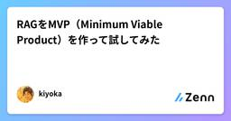
RAGをMVP（Minimum Viable Product）を作って試してみた
Zennの「LLM」のフィード
はじめに最近RAGに興味を持ち、勉強がてらllama-indexなどで遊んでいました。しかし、自分用のユースケースを見つけられず、「これは便利！」と感じるものは出来ませんでした。そこで代替案として、エンジニア向けに、こんなサービスがあったら良いだろうなと思うものを考案し、実際にMVPとして試してみたので共有します。 AWSのクラウドデザインパターンというMVPMVP（Minimum Viable Product）という考え方があります。MVPとは、最小限の機能で実際に動作し、ユーザーに価値を提供できる製品のことです。例えば、SNSアプリを作る場合、最初から高度な機能（動...
2日前
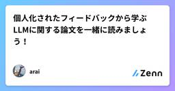
個人化されたフィードバックから学ぶLLMに関する論文を一緒に読みましょう！
Zennの「LLM」のフィード
Personalized-RLHF (P-RLHF) — 個人化された人間フィードバックから学ぶLLMの新定式化この記事は，「自分の理解を深めたい」という気持ちで書いています．読者のみなさんと同じ目線で，一緒に理解を育てていくスタイルです．僕の理解が及ばない部分があれば，優しく教えていただけると幸いです！著作権の関係で画像は掲載できないので，論文をぜひご一読ください！ TL;DR課題：従来のRLHF（およびDPO）は“すべての人間の好みは同じ分布から来る”という一様性仮定を暗に置く．これは多数派の好みを“総意”として学習してしまい，少数派の好みを無視しがち．著者らは...
2日前
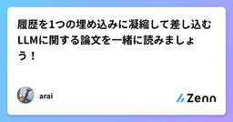
履歴を1つの埋め込みに凝縮して差し込むLLMに関する論文を一緒に読みましょう！
Zennの「LLM」のフィード
Persona-Plug (PPlug) でLLMを個人化：履歴を1つの埋め込みに凝縮して差し込むこの記事は，「自分の理解を深めたい」という気持ちで書いています．読者のみなさんと同じ目線で，一緒に理解を育てていくスタイルです．僕の理解が及ばない部分があれば，優しく教えていただけると幸いです！ TL;DRPPlugは，ユーザ履歴全体を1つの“個人埋め込み” に凝縮し，LLMの入力に前置するだけで個人化を実現する枠組み．LLM本体のパラメータは固定のまま（plug-and-play）．LaMPベンチマークの6タスクで既存の微調整型やリトリーバル型を +1.4%〜+35....
2日前
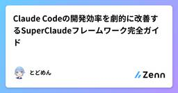
Claude Codeの開発効率を劇的に改善するSuperClaudeフレームワーク完全ガイド
Zennの「LLM」のフィード
1. はじめに 1.1 SuperClaudeとはSuperClaude は、Claude Codeを拡張し、体系的な開発フローを実現するフレームワークです。スラッシュコマンド、ペルソナ（専門家ロール）、MCPサーバ連携などの機能を統合的に提供し、開発プロセス全体の効率化を支援します。主な特徴：統一されたスラッシュコマンド体系: /sc:* 形式で分析・設計・実装・テスト・ドキュメント生成を網羅ペルソナ機能: architect、security、qaなど、各専門領域に特化した応答モードを提供行動モード: 省トークンモード、設計志向モード、調査志向モードなど、タ...
3日前
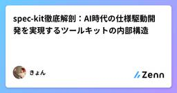
spec-kit徹底解剖：AI時代の仕様駆動開発を実現するツールキットの内部構造 1
1
Zennの「LLM」のフィード
はじめにGitHubが2025年9月にオープンソースとしてリリースした「Spec Kit」は、従来の「コード優先」から「仕様優先」への開発パラダイムシフトを実現するツールキットです。AIコーディングエージェントと連携し、曖昧なプロンプトから明確な仕様、実装計画、タスク分解、そして動作するコードまでを体系的に生成する革新的なアプローチを提供しています。本記事では、spec-kitの内部構造から実装方法論まで、技術者が実践的に活用するための詳細な解説を行います。 spec-kitとは何か？ 従来開発手法の課題これまでのAIコーディングでは「vibe-coding」と呼ばれる...
3日前
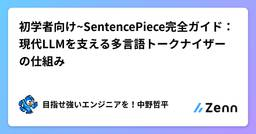
初学者向け~SentencePiece完全ガイド：現代LLMを支える多言語トークナイザーの仕組み
Zennの「LLM」のフィード
はじめにChatGPTやLLaMAなど、現代の大規模言語モデル（LLM）が自然に多言語を処理できる背景には、SentencePieceという革新的なトークナイザー技術があります。「トークナイザーなんて、ただ文章を単語に分けるだけでしょ？」と思っていませんか？実は、SentencePieceは従来のトークナイザーとは全く違うアプローチで、AI業界に革命をもたらした技術なのです。この記事では、SentencePieceの基本概念から実装の詳細まで、技術者向けに詳しく解説します。 SentencePieceとは何か？ 従来の問題点従来のトークナイザーには深刻な問題がありまし...
3日前
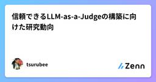
信頼できるLLM-as-a-Judgeの構築に向けた研究動向 2
Zennの「LLM」のフィード
近年、大規模言語モデル（LLM）は自然言語処理から科学研究、教育、法律、金融まで幅広く応用され、その柔軟な生成能力は社会や研究のあり方を大きく変えている。しかし、その柔軟さゆえに出力の評価は難しい。最も確実なのは専門家によるマニュアル評価だが、コストと時間がかかりスケールしにくいという課題がある。この解決策として注目されているのがLLM-as-a-Judgeである。これは、LLMに「ジャッジ（評価者）」の役割を担わせ、人間のような文脈理解と判断力を活かしつつ自動化によるスケーラビリティを実現するアプローチである。しかし現状のLLM-as-a-Judgeは、まだ「信頼できる評価者」と呼ぶに...
3日前
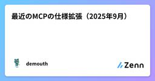
最近のMCPの仕様拡張（2025年9月） 2
Zennの「LLM」のフィード
MCPの仕様拡張について調べました。個人的に２つ気になったものがあったので記事に残しておこうと思います。 ① Enhance authorization server discovery with support for OpenID Connect Discovery 1.0. (PR #797)この変更は、「MCP Authorization」の仕様を拡張するものになります。2025-06-18 版の「MCP Authorization」の仕様では、未認可の MCP Client が Authorization Server にアクセスすると Authorization Se...
3日前
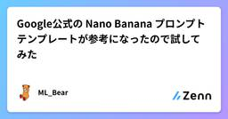
Google公式の Nano Banana プロンプトテンプレートが参考になったので試してみた 348
Zennの「LLM」のフィード
これはなに？Google AI Studio が以下のX投稿で Nano Banana 向けのプロンプトテンプレートを公開していました。個人的に画像生成のPromptingはあまり経験がなく、写経しながら試してみたところ「こんなに詳しく書かないとまともな絵が出てこないのね」と勉強になったので備忘録としてメモを残します📝https://x.com/googleaistudio/status/1962957615262224511以下、ガイドに書かれていた原則、および、日本語で試す際の注意点に少し触れたのち、プロンプトテンプレートの日本語版とそれを実際に僕が試した事例の紹介へと進...
3日前